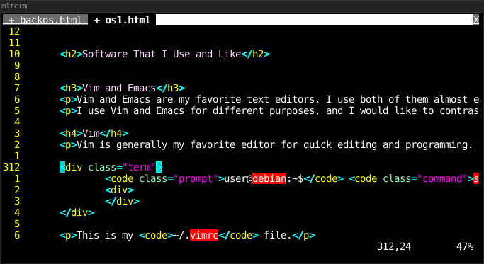

My Primary Operating System — 2021

Operating System and Hardware
Operating System Type
I currently use Debian 10, specifically Debian-live-10.6.0-amd64-standard+nonfree, which I installed in 2020. I am not pleased that I used a nonfree version of Debian, but I did so because of past difficulty configuring Wi-Fi. Even when using the nonfree version—with its preinstalled, proprietary drivers—it took some time to properly connect to a network. I documented the process, and in the future, I should be able to configure Wi-Fi on free Debian. In fact I have now done so on another Debian USB stick, but it forces me to manually activate Wi-Fi upon each boot. Assuming that I choose Debian when I eventually reinstall my main operating system, I will use a free version, but I will probably install a proprietary wireless driver.
Installed to an External USB Drive
The operating system is not installed to an internal hard drive. It is installed to a SanDisk 64GB Cruzer Fit USB 2.0 Flash Drive with persistence. In the past, I always used persistent USB drives of 16 Gigabytes or less, but this time I chose a 64 Gigabyte drive because it happen to be available to me when I installed the operating system. It also has a very portable form factor.
.Installation and Persistence
I have not found a way of creating a persistent Debian USB stick using only dd, so I created this one with mkusb. As far as I know, mkusb can only be installed to Ubuntu systems, but it can be used to create either persistent Debian or Ubuntu USB sticks. It allows for an extra FAT partition to be added to the drive which allows a portion of the drive to be accessed as if it were a standard removable storage volume. I allocated 10 Gigabytes for this purpose, but I have never used them. In fact, I never tested them. It seems like a useful feature because it would prevent me for having to carry both a storage USB stick and bootable USB stick. However, since I am at home in the middle of a pandemic, portability is not particularly important right now.
Why A 64bit Persistent USB Drive
Using a persistent USB stick as a primary operating system is unusual, but its portability provides me with the option of basically carrying my computer anywhere in my pocket. Up until now I have almost exclusively used 32bit bootable operating systems so that I could use them on almost any computer. However, this time I used a 64bit operating system because I had to use Android Studio, which is a program that I do not like and does not support 32bit architecture. Out of the three 64bit machines on which I have attempted to boot it, only one worked. That prevents it from being effectively portable, unlike most of the bootable USB sticks that I have used in the past. Anyhow, portability is not particularly useful during this pandemic.
A reason for using an external USB drive, which is relevant even during a pandemic, is that I do not own the computer which I have been primarily using. Windows 7 (which is no longer supported by M$) is installed on its internal hard drive. I cannot overwrite Windows because I do not own the computer. However, I can use Debian on my external USB drive. Even though I am using USB 2.0, it still boots in under one minute, which is significantly faster than when booting Windows.
System Configuration
Window Manager — i3
My window manager is currently i3. It is the first and only tiling window manager that I have used. I chose it over other tiling window managers because it is written in C (fast/efficient), its configuration files are not written in Lua (Why would they be?), and it seemed easy to install (i.e. not dwm). I first tried it on another Debian installation, which required something light. Rather than installing LXDE or XFCE, I tried i3. I assumed that using it would be a fun experience for a few months.
Unsurprisingly, this is how I installed Xorg and i3.
user@debian:~$ sudo apt-get install xorg
user@debian:~$ sudo apt-get install i3
After using i3 for several months, it I still did not think that it provided any real benefits. Then, I tried to move back to LXDE. Wow, it felt arduous. I had not realized how much more efficient I had become when using i3. I am now using i3 as my primary window manager, and I think that tiling window managers are much more efficient (in more cases) and easy to use (easy to use != easy to learn) than stacking window managers. Stacked/floating windows are useful sometimes, but i3 is capable of creating floating windows when necessary. I am sure that other tiling window managers are very good, and I will probably try dwm in the future.
I use the default i3 keybindings, with the Windows key as the $mod key. I think that the default keybindings are fine, which is probably why they are the defaults. It is slightly confusing that the movement keybindings are slightly different than vim's ('j', 'k', 'l', and ';' instead of 'h', 'j', 'k', and 'l'). I do find that to be confusing, but I do not like to unnecessarily change keybindings because if I become accustom to nonstandard keybindings and then use some other installation of i3, I will become confused. Then again, it is not often that I find myself using other people's i3 installations. As far as I know, I have not yet met another person who even knows what i3 is.
When daylight saving time began, the clock on my i3 status bar did not move forwards an hour even though the system time had been updated. I solved that by opening my /etc/13statis.conf file and commenting-out the line that specified which time zone is to be used. I suppose that this caused it to default to the system time.
tztime local {# timezone = "EST" format = "%Y-%m-%d %I:%M:%S"}For some strange reason, the color scheme of the default terminal emulator (mlterm) is black on white. I have changed it to white on black, which is much nicer for my eyes. This change can be made with in the /etc/mlterm/main configuration file. fg_color=black and bg_color=white needed to be uncommented, and then I switched their colors. I also reduced the font size to 14 and removed the scrollbar.
user@debian:~$ sudo sudo vi /etc/mlterm/main
Setting Up Wi-Fi
I used a nonfree version of Debian, so I did not need to install any Wi-Fi drivers. Next time I install Debian, I will use the free versions.
Even with preinstalled drivers, I had difficulty connecting to a network. I issued all of the commands seen below, and then Debian connected to the network. Most of those commands probably did not do anything useful. I have underlined the commands that I believe actually connected the system to the network, but I could be wrong. A few of the other commands might be helpful to see whether the wireless card is properly configured.
Next time I install Debian, I hope to better understand how to connect to a network. I will then document the process in a future article
users@debian:~$ sudo wpa_supplicant -iwlp3s0 -c/etc/wpa_supplicant.conf -Buser@debian:~$ sudo apt-get install network-manageruser@debian:~$ sudo systemctl start network-manager.serviceuser@debian:~$ nmcli general statususer@debian:~$ nmcli connection show user@debian:~$ nmcli device statususer@debian:~$ nmcli dev wifi listuser@debian:~$ nmcli con add con-name WiFi ifname wlp3s0 type wifi ssid network nameuser@debian:~$ nmcli con modify WiFi wifi-sec.psk network passworduser@debian:~$ nmcli connection add type wifi con-name "network name" ifname wlp3s0 ssid "network name" -- wifi-sec.key-mgmt wpa-eap 802-1x.eap tls 802-1x.identity "network password" 802-1x.ca-cert ~/ca.pem 802-1x.client-cert ~/cert.per 802-1x.private-key-password "network password" 802-1x.private-key ~key.pemuser@debian:~$ nmcli connection user@debian:~$ nmcli device wifi connect network name network passworduser@debian:~$ nmcli device wifi connect network name password network passworduser@debian:~$ ping debian.orguser@debian:~$ nmcli radio wifi onuser@debian:~$ nmcli device wifi connect network name password network passworduser@debian:~$ ping debian.orgConfiguring /etc/fstab
I configured my /etc/fstab file so that my USB drives can be mounted automatically. For example, my primary storage drive mounts to /media/j and my photos drive mounts to /media/p.
They are automatically mounted when the system boots or when I tell the system to mount everything that it recognizes. If I plug a drive in and do nothing, it will not automatically mount. Even when I do tell it to mount everything, it will only mount drives that I have explicitly listed in /etc/fstab. If I need to use a drive that I have not listed in /etc/fstab, I have to mount it manually. That can be somewhat inconvenient, and I may look for an alternative in the future.
As an example, here is how I would configure the system to automatically mount my main drive.
First, I make sure that /media and /mnt are accessible to all users. I do not want to have to use sudo to access mounted drives.
user@debian:~$ sudo chmod 777 /mediauser@debian:~$ sudo chmod 777 /mntThen, I create a mount point for the drive. In this case, I chose /media/j, the most accessible letter on the qwerty keyboard, because this is my primary drive.
user@debian:~$ mkdir /media/jI then open /etc/fstab in a text editor in order to assign my primary drive to the mount point /media/j.
user@debian:~$ sudo vi /etc/fstabThen I add the following line. I have color the UUID, mount point, and file system type are in red because they will be different for different drives.
UUID=ED9E-45B7 /media/j vfat auto,nofail,user,umask=0000 0 0
In order to determine the UUID of a drive the following command can be used. Unfortunately, if multiple drives are available to the system, it can be difficult to tell which UUID is assigned to which drive. I generally run the command with the drive plugged in, run it again after removing the drive, and see which UUID disappears.
user@debian:~$ ls /dev/disk/by-uuidIf vim is installed it can be used, as shown below, to check the UUID of drives. Unlike using ls, vim shows which UUID is associated with which device.
user@debian:~$ vi /dev/disk/by-uuidAudio System
There is nothing surprising about my audio system. I just use PulseAudio (the alsa-utils package was also needed). PulseAudio requires about 96 megabytes of space and alsa-utils only uses a few kilobytes. I installed them with apt-get, as shown below, and I do not think that any configuration was required.
user@debian:~$ sudo apt-get install pulseaudiouser@debian:~$ sudo apt-get install alsa-utilsNumlockx
By default, Num Lock is disabled every time Debian boots. I do not know why that is considered a good default. It was especially inconvenient for me, because I use the numeric keypad to control the system volume via alsamixer. If Num Lock is disabled, pressing a key on the numeric keypad closes alsamixer. When trying to change the volume, it is annoying when the alsamixer closes.
I installed the numlockx package which enables Num Lock by default. It can also be used to turn Num Lock on or off.
user@debian:~$ dsudo apt-get install numlockxScripts
I have written a number of scripts that complete useful functions for me. They can be downloaded here. I am hesitant to call them scripts, because most of them only run one-line commands. I store all of them in /bin because dmenu will not run files that are anywhere else, even if they are in my $PATH.
When I need to execute a command often, I sometimes write a one letter script that executes it. This is convenient, especially because I can easily run in from dmenu (dmenu does not prove TAB-auto-complete with multipart command such as commands that require sudo, options, or other arguments).
m
I have to mount external drives quite often, so I have written a script called m that mounts everything in /etc/fstab. If simply runs the command sudo mount -a.
#!/bin/shsudo mount -a
u
I have created a script called u in order to easily unmount everything in my /media directory. This is useful because I generally only mount one external drive at a time, so I can unmount any drive with this command. I could just type sudo umount /media/* instead, but just typing u is faster.
#!/bin/shsudo umount /media/*
remove-git-credentials
As mentioned below, I have installed Android Studio this year because I need it for FIRST Tech Challenge. My FIRST Tech Challenge team has a GitHub page that I must push commits to through Android Studio. That is separate from my personal GitHub page, to which I push commits on a weekly basis.
Previously, I would remember the passwords of both accounts and use the appropriate one depending on what I was pushing. Then, GitHub decided that it would no longer allow me to use passwords, and it instead forced be to use automatically generated tokens.
I was not going to memorize and type those tokens, so I attempted to automate the process. I used git from the command-line to push changes to my account, and I used git within Android Studio to push changes to my team's account. Therefore, I assigned a token for my personal account to the git credential helper, and I stored the team token within Android Studio.
However, git always overrode Android Studio and forced it to attempt to use my personal token. Therefore, I needed a convenient way to turn off the git credential helper when I was pushing with Android Studio. That is what this script, remove-git-credentials, does. I also have a script called configure-git-credentials that does the opposite task.
#!/bin/shgit config --global --unset credential.helper
configure-git-credentials
This script activates the git credential helper. The reason why it is useful is documented in the section regarding the remove-git-credentials script, which is shown above.
#!/bin/shgit config --global credential.helper storev
I use alsamixer to control my system volume, which is something that I have to do very often. Because I have to open alsamixer often, it is inconvenient to open an new terminal window, type alsamixer, and press enter. Therefore, I have created a script called v that opens alsamixer. Consequently, I can simply type v into dmenu in order to open alsamixer.
#!/bin/shmlterm -e alsamixer
l
The purpose of this script is to activate i3lock quickly and with a black rather than white background.
#!/bin/shi3lock -c 000000
andriod-studio
I needed to install Android Studio this year because I am on a FIRST Tech Challenge team. (Because of the pandemic, I am working on the team's software remotely.) Android Studio, which is an obnoxiously huge program created by Google, was not in the Debian repository, so I had to down load and install it myself. It did not add itself to my $PATH, so I initially had no proper way of starting it (it was probably expecting some sort of graphical applications menu). Therefore, I wrote this tiny script called android-studio that simply starts the program. That allows me to start Android Studio from dmenu.
#!/bin/shexec /opt/android-studio/bin/studio.sh
fixzoom
Because of FIRST Tech Challenge, I have had to use Zoom quite frequently (although I do not recommend it). In order for the White Board or Annotation features to work, I had to install xcompmgr. If I need to use either of the before mentioned Zoom features, I must first run xcompmgr -c -l0 -t0 -r0 -o.00, otherwise, I am presented with a black screen and cannot see what I am drawing. The command changes the back of my desktop from black to gray until I reboot. I am not exactly sure what it does, but I put it in a script called fixzoom so that I do not need to remember the full command and associated arguments.
#!/bin/shxcompmgr -c -l0 -t0 -r0 -o.00
Software That I Use and Like
Vim and Emacs
I feel that it is necessary to address both Vim and Emacs under the same heading. I use both of them almost everyday, but every few months, I decide that Vim is so superior to Emacs that I should only use Vim. Then, I find some Emacs features that I did not know about, and I decide that Emacs is so superior to Vim that I should only use Emacs. Then I find another Vim feature that. . .
I use Vim and Emacs for different purposes, and the best summary of my opinion of these programs is this: "If I could only use one text editor for the rest of my life, I would use Vim, but if I could only use one program for the rest of my life, I would use Emacs."
Vim
Vim is generally my favorite program for programming and general editing . I installed it from the Debian repository as shown below. It required about 33.2 MB of disk space.
user@debian:~$ sudo apt-get install vim
This is my ~/.vimrc file.
runtime! debian.vimsyntax onset background=darkau BufReadPost * if line("'\"") > 1 && line("'\"") <= line("$") | exe "normal! g'\"" | endiffiletype plugin indent onset showcmd " Show (partial) command in status line.set showmatch " Show matching brackets.set ignorecase " Do case insensitive matchingset smartcase " Do smart case matchingset incsearch " Incremental searchset autowrite " Automatically save before commands like :next and :makeset hidden " Hide buffers when they are abandonedset mouse=a " Enable mouse usage (all modes)set spellset nuset rnuset nowrapset smartcase" Source a global configuration file if availableif filereadable("/etc/vim/vimrc.local")source /etc/vim/vimrc.localendifEmacs
Emacs is not really a text editor. It is a Lisp interpreter preloaded with many programs/modes/features, some of which are used for text editing. It is my favorite "text editor" for writing, and I also benefit from the file management and bulk rename functions of dired and many other exotic features.
I installed Emacs from the Debian repository as shown below. It used 255MB of disk space.
user@debian:~$ sudo apt-get install emacs
Alpell-en also had to be installed in order to make flyspell-mode work.
user@debian:~$ sudo apt-get install aspell-en
Here is my ~/.emacs.d/init.el file.
;; Added by Package.el. This must come before configurations of;; installed packages. Don't delete this line. If you don't want it,;; just comment it out by adding a semicolon to the start of the line.;; You may delete these explanatory comments.(package-initialize)(custom-set-variables;; custom-set-variables was added by Custom.;; If you edit it by hand, you could mess it up, so be careful.;; Your init file should contain only one such instance.;; If there is more than one, they won't work right.'(ansi-color-names-vector["#212526" "#ff4b4b" "#b4fa70" "#fce94f" "#729fcf" "#e090d7" "#8cc4ff" "#eeeeec"])'(custom-enabled-themes (quote (manoj-dark)))'(image-dired-append-when-browsing t)'(inhibit-startup-screen t)'(package-selected-packages (quote (org coffee-mode cl-lib chess))))(custom-set-faces;; custom-set-faces was added by Custom.;; If you edit it by hand, you could mess it up, so be careful.;; Your init file should contain only one such instance.;; If there is more than one, they won't work right.)(tool-bar-mode 0)(menu-bar-mode 0)(toggle-scroll-bar 0)(add-hook 'text-mode-hook 'flyspell-mode)(add-hook 'prog-mode-hook 'flyspell-prog-mode)(add-hook 'text-mode-hook 'abbrev-mode)I also have quite a large collection of abbrev-mode abbreviations stored in my ~/.emacs.d/abbrev_defs file, which I used for the 2020–2021 FTC season. The file is shown below.
;;-*-coding: utf-8;-*-(define-abbrev-table 'Buffer-menu-mode-abbrev-table '())(define-abbrev-table 'Custom-mode-abbrev-table '())(define-abbrev-table 'apropos-mode-abbrev-table '())(define-abbrev-table 'awk-mode-abbrev-table'())(define-abbrev-table 'bookmark-bmenu-mode-abbrev-table '())(define-abbrev-table 'bookmark-edit-annotation-mode-abbrev-table '())(define-abbrev-table 'c++-mode-abbrev-table'())(define-abbrev-table 'c-mode-abbrev-table'())(define-abbrev-table 'calendar-mode-abbrev-table '())(define-abbrev-table 'comint-mode-abbrev-table '())(define-abbrev-table 'completion-list-mode-abbrev-table '())(define-abbrev-table 'css-mode-abbrev-table '())(define-abbrev-table 'diff-mode-abbrev-table '())(define-abbrev-table 'edit-abbrevs-mode-abbrev-table '())(define-abbrev-table 'elisp-byte-code-mode-abbrev-table '())(define-abbrev-table 'emacs-lisp-mode-abbrev-table '())(define-abbrev-table 'eww-bookmark-mode-abbrev-table '())(define-abbrev-table 'eww-buffers-mode-abbrev-table '())(define-abbrev-table 'eww-history-mode-abbrev-table '())(define-abbrev-table 'eww-mode-abbrev-table '())(define-abbrev-table 'fundamental-mode-abbrev-table '())(define-abbrev-table 'global-abbrev-table'(("3ing" "3D printing" nil 0)("3p" "3D printer" nil 6)("3ps" "3D printers" nil 0)("a3" "AndyMark NeveRest 3.7:1 Motor" nil 0)("a40" "AndyMark NeveRest 40:1 Motor" nil 1)("a60" "AndyMark NeveRest 60:1 Motor" nil 8)("ah" "axle hub" nil 0)("ahs" "axle hubs" nil 1)("am" "AndyMark" nil 12)("ands" "Android Studio" nil 2)("ans" "Android Studio" nil 9)("ap" "Autonomous Period" nil 5)("auto" "autonomous" nil 1)("c" "chassis" nil 34)("cc" "c-channel" nil 19)("chm" "Core Hex Motor" nil 4)("conf" "configuration" nil 8)("cw" "compliant wheel" nil 1)("dcp" "Driver-Controlled Period" nil 1)("ds" "Driver Station" nil 10)("dz" "Drop Zone" nil 10)("ee" "end effector" nil 68)("ef" "electronics frame" nil 5)("eg" "End Game" nil 21)("fl" "Fayetteville Library" nil 2)("fp" "field perimeter" nil 11)("fsc" "Fayetteville Senior Center" nil 2)("fw" "flywheel" nil 32)("fws" "flywheels" nil 1)("ged" "gyroEncoderDrive" nil 1)("gh" "GitHub" nil 3)("gr" "gear ratio" nil 4)("ha" "holding area" nil 1)("hg" "High Goal" nil 14)("hm" "Hardware Map" nil 8)("hp" "hole pattern" nil 12)("hps" "hole patterns" nil 3)("ic" "Innovation Challenge" nil 0)("la" "Lift Arm" nil 1)("lg" "Low Goal" nil 1)("ll" "Launch Line" nil 10)("lz" "Launch Zone" nil 1)("lza" "Launch Zone Area" nil 6)("m" "mechanism" nil 32)("mg" "Mid Goal" nil 2)("mr" "Modern Robotics" nil 2)("mrrs" "Modern Robotics range sensor" nil 1)("nr" "NeveRest" nil 0)("ocv" "OpenCV" nil 0)("om" "OpMode" nil 8)("oms" "OpModes" nil 0)("os" "Onshape" nil 13)("owga" "One Wobble Goal Autonomous" nil 3)("p.m" "p.m." nil 0)("pf" "Playing Field" nil 3)("pg" "Plexiglas" nil 2)("pled" "Pre-Loaded" nil 8)("pm" "phone mount" nil 1)("ps" "Power Shot" nil 1)("pst" "Power Shot Target" nil 4)("psts" "Power Shot Targets" nil 1)("r" "Ring" nil 58)("rc" "Robot Controller" nil 13)("rchm" "REV Core Hex Motor" nil 6)("reh" "REV Expansion Hub" nil 9)("rg" "Ring kicker" nil 0)("ri" "ring intake" nil 1)("rk" "Ring kicker" nil 1)("rl" "Ring launch" nil 1)("rom" "\"RobotOpMode\"" nil 13)("rr" "Rover Ruckus" nil 0)("rs" "Rings" nil 109)("rtm" "Ring translation mechanism" nil 2)("rum" "REV ULTRAPLANETARY 1:1 HEX MOTOR" nil 1)("sc" "starting configuration" nil 9)("sl" "Start Line" nil 0)("ss" "Starter Stack" nil 36)("ssc" "Starter Stack configuration " nil 0)("sss" "Starter Stacks" nil 0)("t" "TETRIX" nil 35)("tele" "teleOp" nil 18)("tg" "Tower Goal" nil 0)("tm" "translation mechanism" nil 7)("tmasc" "TETRIX MAX Axle Set Collars" nil 0)("tmfb" "TETRIX MAX Flat Bracket" nil 4)("tr" "translation ramp" nil 36)("twga" "Two Wobble Goal Autonomous" nil 1)("tx" "TETRIX" nil 1)("tz" "Target Zone" nil 20)("tzs" "Target Zones" nil 1)("ug" "ULTIMATE GOAL" nil 3)("wg" "Wobble Goal" nil 170)("wgcg" "Wobble Goal capture gate" nil 2)("wgla" "Wobble Goal lift arm" nil 0)("wgp" "Wobble Goal placer" nil 28)("wgpa" "Wobble Goal placer arm" nil 13)("wgs" "Wobble Goals" nil 47)))(define-abbrev-table 'help-mode-abbrev-table '())(define-abbrev-table 'html-mode-abbrev-table '())(define-abbrev-table 'idl-mode-abbrev-table '())(define-abbrev-table 'image-dired-display-image-mode-abbrev-table '())(define-abbrev-table 'image-dired-thumbnail-mode-abbrev-table '())(define-abbrev-table 'java-mode-abbrev-table'())(define-abbrev-table 'js-jsx-mode-abbrev-table '())(define-abbrev-table 'js-mode-abbrev-table '())(define-abbrev-table 'lisp-mode-abbrev-table '())(define-abbrev-table 'messages-buffer-mode-abbrev-table '())(define-abbrev-table 'mhtml-mode-abbrev-table '())(define-abbrev-table 'mpc-mode-abbrev-table '())(define-abbrev-table 'mpc-songs-mode-abbrev-table '())(define-abbrev-table 'mpc-status-mode-abbrev-table '())(define-abbrev-table 'mpc-tagbrowser-dir-mode-abbrev-table '())(define-abbrev-table 'mpc-tagbrowser-mode-abbrev-table '())(define-abbrev-table 'objc-mode-abbrev-table'())(define-abbrev-table 'occur-edit-mode-abbrev-table '())(define-abbrev-table 'occur-mode-abbrev-table '())(define-abbrev-table 'outline-mode-abbrev-table '())(define-abbrev-table 'package-menu-mode-abbrev-table '())(define-abbrev-table 'pike-mode-abbrev-table'())(define-abbrev-table 'process-menu-mode-abbrev-table '())(define-abbrev-table 'prog-mode-abbrev-table '())(define-abbrev-table 'scss-mode-abbrev-table '())(define-abbrev-table 'select-tags-table-mode-abbrev-table '())(define-abbrev-table 'sgml-mode-abbrev-table '())(define-abbrev-table 'shell-mode-abbrev-table '())(define-abbrev-table 'special-mode-abbrev-table '())(define-abbrev-table 'tabulated-list-mode-abbrev-table '())(define-abbrev-table 'term-mode-abbrev-table '())(define-abbrev-table 'text-mode-abbrev-table '())(define-abbrev-table 'thumbs-mode-abbrev-table '())(define-abbrev-table 'thumbs-view-image-mode-abbrev-table '())(define-abbrev-table 'url-cookie-mode-abbrev-table '())(define-abbrev-table 'vc-git-log-edit-mode-abbrev-table '())(define-abbrev-table 'vc-git-log-view-mode-abbrev-table '())(define-abbrev-table 'vc-git-region-history-mode-abbrev-table '())(define-abbrev-table 'xref--xref-buffer-mode-abbrev-table '())Firefox
My primary web browser is Firefox 68.12.0esr Extended Support Release. I think that it required 280 MB of disk space. As noted below, I use a different browser (Chromium) for FIRST Tech Challenge.
user@debian:~$ sudo apt-get install firefox-esr
I will likely have to move to a different browser in the future once Google kills Mozilla. Brave seems like and interesting option.
Other than that I am glad that it is not based on software written by Google, I do not have anything particularly important to say about Firefox itself. However, I would like to comment on the add-ons that I use.
- ClearURLs
- Dark Reader
- DuckDuckGo Privacy Essentials
- Facebook Container
- Google Container
- HTTPS Everywhere
- Privacy Badger
Dark Reader modifies the appearance of most websites so that they are darker and much less harsh to view than they would be otherwise. I use its default settings, and I also have Firefox's dark theme turned on. I previously disliked dark themed programs because they look somewhat sinister, but I have now concluded that the lack of eyestrain is more than an adequate trade-off. I have been considering rethemeing this whole website with a dark theme. If I still have not done that yet as of the time that you are reading this, then I suppose you should probably just use the Dark Reader. Wait a minute! When I typed Dark Reader in the previous sentence, I just realized that it is supposed to sound like Darth Vader. I have used it for almost a year without realizing that, even though the icon is a picture of Darth Vader (which I did realize).
Facebook Container and Google Container isolate Google and Facebook in separate container tabs, hindering their ability to track users across multiple websites. The only Google or Facebook service that I use on a regular bases within this browser is YouTube (although I use alternatives when I can).
DuckDuckGo Privacy Essentials, Privacy Badger, and ClearURLs all work to block trackers and or advertisements. They all have different functionality. I use them due to concern about trackers; I am not generally bothered by advertisements.
HTTPS Everywhere ensures that all connections use https. If I need to use a website that can only be accessed via http, then a warning is displayed before the website can be accessed. Humorously, I recently had to submit a payment through cashnet.com, and the payment could not be submitted until I turned HTTPS Everywhere off. Somehow, that does not make me feel safe.
Audacity
I use audacity for recording, editing, and converting audio. I installed it from the Debian repository, and I think that it required 83 MB of disk space.
user@debian:~$ sudo apt-get install audacity
As shown in the screenshot below, I have the interface set to a dark theme (which is called "High Contrast"). I used this program for so long with its default theme (not knowing that it could be changed), that the new theme surprises me every time I open the program. I will become accustom to it eventually.
Git
I installed Git from the Debian repository, and I believe that it required about 38 MB of disk space. I use Git often. I even use it to keep track of the files for this website.
user@debian:~$ sudo apt-get install git
Flameshot
I installed flameshot from the Debian repository, and it required a negligible amount of disk space.
user@debian:~$ sudo apt-get install flameshot
It is a simple screenshot program that can capture the whole or a portion of the screen. It also allows annotations to be added to images before they are saved. I used it to capture all of the screenshots on this page. Unfortunately, I cannot provide a screenshot of it because it cannot capture images of itself. Instead, I will provide an image of Firefox that I captured and annotated with flameshot. If you would like to see flameshot itself, please view its website.
PDFtk
PDFtk is a very useful command-line PDF manipulation tool. I installed it from the Debian repository. I did not record how much disk space it required, so I assume that the space was negligible.
user@debian:~$ sudo apt-get install pdftk
PDFtk provides basically all of the "reasonable" PDF manipulation functionality that I need or may need. It allows PDFs to be split, concatenated, interleaved, and reordered. It can also rotate pages individually or as a group.
This version of PDFtk is released under the GPL license, but there is apparently also a graphical "professional" version that is not free (as in cost or in freedom).
You may have noticed that over the course of this article, I sometimes provide links to the websites of some programs but not others. I generally make that choice based on how many trackers and how much junk they contain. Among all of them, the PDFtk website had by far the highest number of obvious third-party trackers. It had upwards of twenty trackers from Google, Yahoo!, Verizon, The Rubicon Project, Amazon, Facebook, WarnerMedia, and others. Wow, that is a lot of redundant junk! I am not including a link to it.
Its command options can be quite complex. If I need to do something more than just concatenating PDFs, I generally need to reference documentation. Here is a command that would concatenate two PDFs.
user@debian:~$ pdftk pdf_number_one.pdf pdf_number_two.pdf cat output output_document.pdf
Here is an example of a time that PDFtk was extremely useful to me. As a have already stated, I have been using this operating system for FIRST Tech Challenge this year. One very important task that is a part of that is creating our engineering notebook. By the end of the season, it contained 361 pages and was composed of ten separate documents. I needed to, on a regular basis, concatenate all ten documents together in a specific order. Not only did they have to be concatenated, but the table of contents pages of specific documents had to be split and moved to a different location within the document so that all of the table of contents pages would be together. Fortunately, all of this work could be done with one PDFtk command. Unfortunately, as shown below it was a very very long command. Yes, that is one command! My solution was to put the command in a makefile. Then, all that I had to do in order to completely assemble the document was type make. That was extremely convenient.
user@debian:~$ pdftk A=Cover_ULTIMATE_GOAL.pdf B=Summary_Page_ULTIMATE_GOAL.pdf C=Table_Of_Contents_ULTIMATE_GOAL.pdf D=Team_Section_ULTIMATE_GOAL.pdf F=Part_1_Of_ULTIMATE_GOAL_Engineering_Section.pdf G=Part_2_Of_ULTIMATE_GOAL_Engineering_Section.pdf H=Part_3_Of_ULTIMATE_GOAL_Engineering_Section.pdf I=Business_Plan_ULTIMATE_GOAL.pdf J=Sustainability_Plan_ULTIMATE_GOAL.pdf K=Strategic_Plan_ULTIMATE_GOAL.pdf cat A B C D F6 F1-5 G1-6 H1-8 F7-end G7-end H9-end I J K output notebook.pdf
GIMP
GIMP is installed, but for some reason, I did not document its installation. I know that I installed it from the Debian repository, but I do not know how mush disk space it required. I have to edit images reliably often, and I basically do all of that editing in GIMP. There are many tools and functions within GIMP that I have not yet learned, but I know enough to do quite a bit.
Mirage
I can use Emacs to view images, but it does not allow me to easily cycle through all of the images in a directory. I occasionally find doing so to be useful, so I installed a simple dedicated image viewer call Mirage. I did not record the amount of disk space that it required, so that space was most likely negligible.
user@debian:~$ sudo apt-get install mirage
Groff
I often use groff to create PDF documents because it is less monstrous than LaTeX. Some portion of groff was installed by default, but in order for me to cause it to create PDFs, I apparently needed to install about 21 MB of additional packages.
user@debian:~$ sudo apt-get install groff
Thunderbird
For too long, I used Outlook.com as my e-mail interface and stored none of my e-mail locally. That is obviously suboptimal, so I began searching for an alternative. I spent some time using both KMail and Evolution. However, I could not comfortably use them because they did not provide a conversation view for easily navigating the messages within a thread. I then tried Geary, which provided a conversation view and a very modern interface. However, I abandoned it when I found that there was no way for me to save drafts. That must have been a bug, but I have difficulty understanding how it could have been included in an official release.
I had tried Thunderbird in the past, but I disliked it because it did not have a conversation view. However, once I realized that there was a popular add-on that provides a conversation view, I changed my mind. It required 197 MB of disk space, and has become my primary e-mail client. I installed two addions: Thunderbird Conversations and ThunderHTMLedit. I also enabled the dark theme.
user@debian:~$ sudo apt-get install thunderbird
I selected the "Use Paragraph format instead of Body Text by default" option because the Paragraph format causes strange vertical spacing.
By default, Thunderbird automatically wraps lines at 72 characters. I think that hard wrapping e-mail text is not generally a good idea, so I disabled that feature. This was surprisingly difficult to disable, but the process is shown in the series of images below. I opened the Config Editor, turned off mail.wrap_long_lines, and set mailnews.wraplength to 0. I am not sure if turning mail.wrap_long_lines off was necessary.
Mutt
I have heard many good things about the Mutt e-mail client. It is probably the most common command-line e-mail client. It was quite hard to properly configure, but it now works. However, I do not know how to use it to access directories within my e-mail account other than Inbox, Sent, and other default directories. It is also not configured to store my mail locally. I basically never use Mutt within this installation because I have Thunderbird.
user@debian:~$ sudo apt-get install mutt
Command Line Bibles
I have installed some command line bible programs. I have one that provides an English King James Bible that includes the Apocrypha and another that provides a Greek text. Both were obtained from Luke Smith. He also provides a Latin Vulgate version, but I did not install it. They are not in the Debian repository, so I installed them from source as explained on Mr. Smith's web site.
Kdenlive
Kdenlive is a powerful video editing program. It is a KDE project and is licensed under the GPL. It provides a wide array of features including keyframe based effects and chroma key, making it the most feature-rich freely licensed video editing program of which I am aware.
Because of the developers' focus on adding advanced features, they may have lacked the ability to focus on increasing reliability or improving the user interface. Using the program feels much less intuitive than it could be, but that can be overcome by becoming familiar with the interface over time. Although I would like a better interface, I understand that it is a community driven project. If they have to focus on something, I would prefer it to be the program's capabilities not its interface.
As I mentioned, the program is also somewhat unreliable. It periodically crashes without any warning. Thankfully, it has a very good automatic save/backup function. Consequently, when the program crashes, work is almost never lost, and any projects that were in progress can generally be recovered within a few seconds of restarting the program. Although this is a mild inconvenience, it does not greatly detract from the functionality of the program.
I installed Kdenlive from the Debian repository, and it required over 100 MB of disk space
user@debian:~$ sudo apt-get install kdenlive
By default, Kdenlive only had one theme, which mostly used light colors. I wanted to have a dark theme that would be less harsh to view. In order for other themes to be available within Kdenlive, I installed the kde-style-breeze package.
user@debian:~$ sudo apt-get install kde-style-breeze
In order to access those additional themes, I may have also needed to install breeze and/or arc and/or arc-theme, but I do not think so.

bc
GNU bc is a arbitrary precision arithmetic calculator. Occasionally, I need to evaluate some mathematical expressions, and bc was a very light and command-line based program for that, which used a negligible amount of disk space.
user@debian:~$ sudo apt-get install bc
Applications That I Use and Dislike
Zoom
Because of my involvement in FIRST Tech Challenge during the pandemic, I had to use the Zoom videoconferencing client about three times per week. I found that it worked much better than the Zoom web-interface.
Although Zoom served a purpose for me, I do not enjoy having proprietary software installed on my system. What is more, Zoom has a history of security issues. In 2019, Zoom took months to fix a vulnerability that allowed any web site to start a Zoom call with any visiting client and activate the client's camera. This was possible even if the user had uninstalled Zoom, because of a web server that was left on client machines even when Zoom was uninstalled that allowed Zoom to be automatically reinstalled by any website without any user action.
Zoom was not in the default Debian repository, so I downloaded a .deb file from the Zoom website and used it to install Zoom using apt-get. It required 48.6 MB of disk space.
Android Studio
Yet again, due to my involvement in FIRST Tech Challenge I had to install a program that I disliked. I installed Android Studio.
- Android Studio is a proprietary program.
- Android Studio is written by Google.
- Android Studio is massive and slow and bloated
I could not install it from the default Debian repository because it obviously was not there. After, of course, reading a few thousand words of terms and conditions, I downloaded the program as a .deb package from Android's website. I then used apt-get to install that huge 882 MB program.
It always loaded very slowly, and it frequently required updates, which were often hundreds of megabytes. In the future, I hope never to need this titanic Google text editor.
Applications That I May Begin Using in the Future
LaTeX
Because of how large LaTeX is, I did not install it within this operating system. I used Groff instead. However, there are tasks for which LaTeX is very useful compared to other document preparation systems. I have used it before, and I will probably install and use it on other systems in the future.
dwm
Although I used i3 as my window manager on this installation of Debian, I think at dwm has some substantial advantages. I used i3 because it was trivial to install, but I think that I will use dwm in the future.